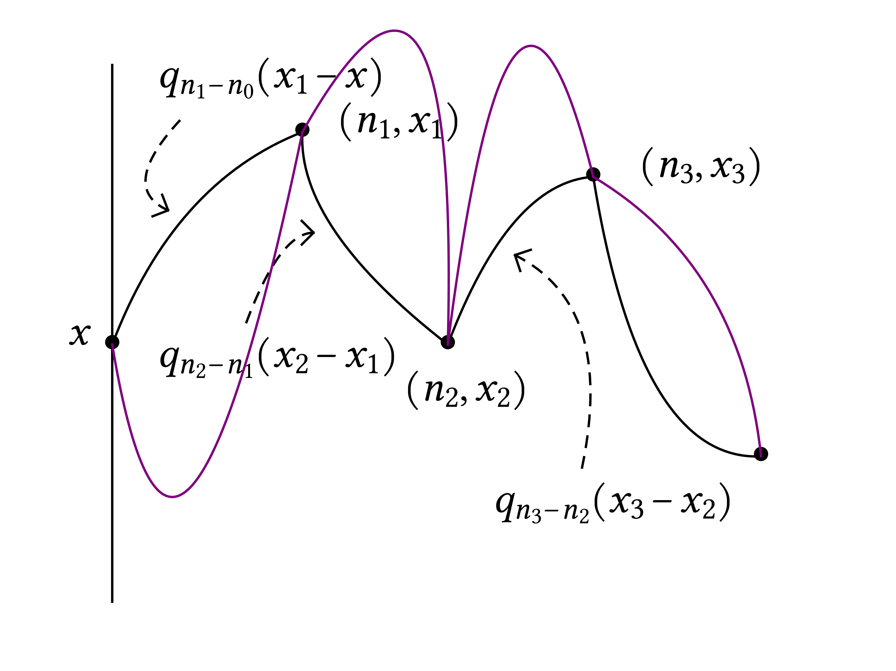
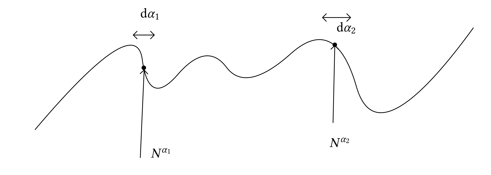
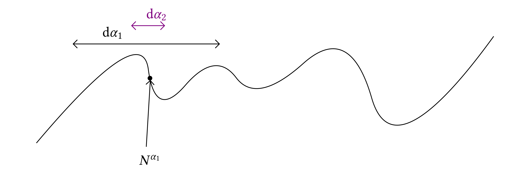
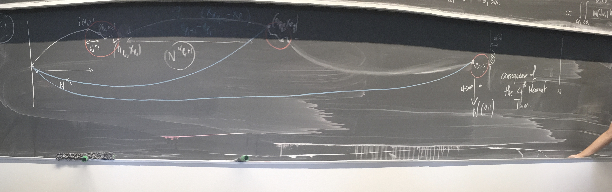
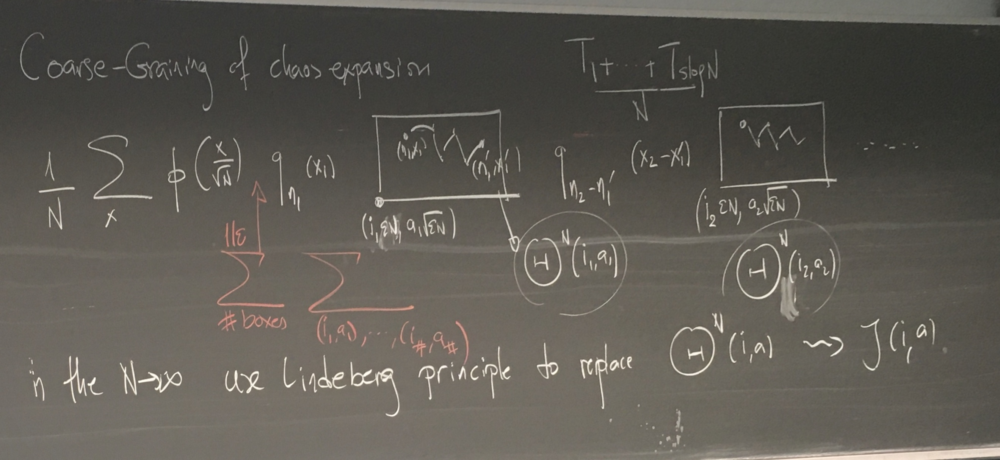

Zygouras - Critical SPDEs
The lectures of Nikolaos Zygouras at the second workshop of the
Bernoulli Center Program “New developments and challenges in
Stochastic Partial Differential Equations”
Zygouras | Critical SPDEs | Lecture 1 | Monday July 22,
14:15–15:45
Lecture plan: 1) Overview, variance computations. 2) Structures of SHE.
3) ...
SHE
\(\displaystyle \partial_t u = \frac{1}{2} \Delta u + \zeta u\)
Criticality of \(d = 2\): if \(u^{\varepsilon} (t, x) = u (t /
\varepsilon^2, x / \varepsilon)\), then
\(\displaystyle \partial_t u^{\varepsilon} = \Delta u^{\varepsilon} +
\varepsilon^{(d - 2) /
2} \dot{W} u^{\varepsilon} .\)
\(\displaystyle \begin{array}{|l|}
\hline
\text{SPDE criticality}
\quad \Leftrightarrow \quad \text{Disordered systems
marginality}\\
\hline
\end{array}\)
Rigorous approach focus on \(d = 2\). Mollify:
\(\displaystyle \partial_t u_{\varepsilon} = \Delta u_{\varepsilon} +
\beta_{\varepsilon}
\zeta_{\varepsilon} u_{\varepsilon}\)
with \(\zeta_{\varepsilon}\) a mollification at scale \(\varepsilon\) of
the space-time white noise and
\(\displaystyle \beta_{\varepsilon} = \hat{\beta} \sqrt{\frac{2
\pi}{\log 1 / \varepsilon}}\)
Theorem. (Caravenna-Sun-Z '17) For any fixed \(x,
t\):
\(\displaystyle u_{\varepsilon} (t, x) \longrightarrow \left\{
\begin{array}{lll}
e^{\sigma_{\hat{\beta}} X - \frac{1}{2}
\sigma_{\hat{\beta}}^2}, & &
\hat{\beta} < 1\\
0, & &
\hat{\beta} \geqslant 1
\end{array} \right.\)
with \(\sigma_{\hat{\beta}} = \log (1 / (1 - \hat{\beta}^2))\) where
\(X \sim \mathcal{N} (0, 1)\).
Theorem. (Caravenna-Sun-Z '17) For any nice test
function \(\phi\)
\(\displaystyle \sqrt{\frac{\log 1 / \varepsilon}{2 \pi}}
\int_{\mathbb{R}^2} (u_{\varepsilon}
(t, x) - 1) \phi (x) \mathrm{d} x
\longrightarrow \int_{\mathbb{R}^2} v (t, x)
\phi (x) \mathrm{d} x\)
where
| \(\displaystyle \partial_t v = \frac{1}{2} \Delta v
+ \sqrt{\frac{1}{1 - \hat{\beta}^2}}
\tilde{\zeta} \) |
(1) |
for space-time white noise \(\tilde{\zeta}\).
Some other examples.
2d KPZ
\(\displaystyle \partial_t h_{\varepsilon} = \frac{1}{2} \Delta
h_{\varepsilon} + \frac{1}{2}
| \nabla h_{\varepsilon} |^2 + \hat{\beta}
\sqrt{\frac{2 \pi}{\log 1 /
\varepsilon}} \zeta_{\varepsilon} -
c_{\varepsilon}\)
Theorem. (CSZ '18) For all \(\hat{\beta} < 1\),
\(\displaystyle \sqrt{\frac{\log 1 / \varepsilon}{2 \pi}}
\int_{\mathbb{R}^2} (h_{\varepsilon}
(t, x) -\mathbb{E}h_{\varepsilon}
(t, x)) \phi (x) \mathrm{d} x\)
has same Edward–Wilkinson limit (1) as above,
i.e. \(\longrightarrow \int_{\mathbb{R}^2} v (t, x) \phi (x) \mathrm{d}
x\).
Gu (2018+) proved the case for small \(\hat{\beta}\) and
Chatterjee–Dunlap (2018-) (tightness).
2d Anisotropic KPZ
\(\displaystyle \partial_t h_{\varepsilon} = \frac{1}{2} \Delta
h_{\varepsilon} + \frac{1}{2}
| \nabla h_{\varepsilon} |^2 + \lambda
\sqrt{\frac{1}{\log 1 / \varepsilon}}
((\partial_x h_{\varepsilon})^2 -
(\partial_y h_{\varepsilon})^2) +
\zeta_{\varepsilon}\)
Theorem. (Erhard–Cannizzaro–Toninelli
'21) Edwards–Wilkinson limit: \(h_{\varepsilon} \rightarrow h\)
with
\(\displaystyle \partial_t h = \frac{\nu_{\operatorname{eff}}}{2}
\Delta h +
\sqrt{\nu_{\operatorname{eff}}} \zeta\)
with \(\nu_{\operatorname{eff}} = \sqrt{1 + \frac{2
\lambda^2}{\pi}}\) for all \(\lambda > 0\), i.e. there is no phase
transition.
See also Erhard–Cannizzaro–Schönbauer (2019) and
Cannizzaro–Gubinelli–Toninelli (2023) on Burgers equation.
Semilinear SHE
\(\displaystyle \partial_t u_{\varepsilon} = \frac{1}{2} \Delta
u_{\varepsilon} +
\sqrt{\frac{1}{\log 1 / \varepsilon}} \sigma
(u_{\varepsilon})
\zeta_{\varepsilon}\)
Theorem. (Dunlap–Gu '20) If \(\| \sigma
\|_{\operatorname{Lip}} < (2 \pi)^{1 / 2}\) then \(u_{\varepsilon}
(\varepsilon^{2 - Q}, x) \xrightarrow{d} \Xi (Q)\)
pointwise–fluctuation solving a FBSDE:
\(\displaystyle \left\{ \begin{array}{l}
\mathrm{d} \Xi (q) = J (Q -
q, \Xi (q)) \mathrm{d} B (q)\\
J (q, b) = \frac{1}{2 \sqrt{\pi}}
\sqrt{\mathbb{E} [\sigma^2 (\Xi (q))]}
\end{array} \right.\)
Theorem. (Ran Tao '22) Edwards–Wilkinson
convergence to
\(\displaystyle \partial_t u = \frac{1}{2} \Delta u + \sqrt{\mathbb{E}
[\sigma (\Xi (2))]}
\zeta .\)
2d Allen–Cahn critical noise scaling
\(\displaystyle \left\{ \begin{array}{l}
\partial_t u_{\varepsilon} =
\frac{1}{2} \Delta u_{\varepsilon} +
u_{\varepsilon} -
u_{\varepsilon}^3\\
u_{\varepsilon} (0, x) = \frac{\lambda}{\sqrt{\log
(1 / \varepsilon)}}
\xi_{\varepsilon} (x)
\end{array} \right.\)
\(\displaystyle u (t, x) = \sum_{\text{ternary trees $\tau$}} \tau\)
In the last lecture: KPZ, nonlinear SHE, Allen–Cahn.
Emergence of strong correlations: the critical 2d
stochastic heat flow
Theorem. (CSZ '22) If
\(\displaystyle \beta_{\varepsilon}^2 = \frac{\pi}{| \log \varepsilon
|} \left( 1 +
\frac{\theta}{| \log \varepsilon |} \right)\)
then
\(\displaystyle \int_{\mathbb{R}^2} \phi (x) u_{\varepsilon} (t, x ;
\psi) \mathrm{d} x
\longrightarrow \int_{\mathbb{R}^2}
\int_{\mathbb{R}^2} \phi (x)
Z^{\operatorname{SHF}}_{\theta} (t ; x,
y) \psi (y) \mathrm{d} x \mathrm{d} y\)
and \(Z^{\operatorname{SHF}}_{\theta}\) is: 1) a log-correlated
field; 2) not Gaussian or \(\exp (\operatorname{Gaussian})\); 3) is a
measure, singular wrt. Lebesgue; 4) some hints of self-similarity.
Stochastic Heat Equation
In the continuum setting we let
\(\displaystyle \beta_{\varepsilon} = \sqrt{\frac{2 \pi}{\log 1 /
\varepsilon}}\)
while in the discrete setting (discrete, directed polymer model)
\(\displaystyle \beta_N = \hat{\beta} \sqrt{\frac{\pi}{\log N}}\)
Via the Feynman–Kac formula: \(B_s\) Brownian motion starting at
\(x\):
\(\displaystyle u_{\varepsilon} (t, x) =\mathbb{E}_x \left[ \exp \left\{
\int
\beta_{\varepsilon} \xi_{\varepsilon} (t - s, B_s) \mathrm{d} s -
\frac{1}{2}
\beta_{\varepsilon}^2 \langle \times \rangle \right\}
\right],\)
where \(\xi_{\varepsilon}\) is a spatial smoothing of the
space–time white noise.
and in the discrete setting: simple random walk \((S_n)_n\) starting at
\(0\)
\(\displaystyle u_{\varepsilon} (t, x) =\mathbb{E}_0 \left[ \exp \left\{
\sum_{n = 1}^N
\beta_N \omega (n, S_n) - \lambda (\beta_N) \right\}
\mathbb{1}_{S_N = x}
\right],\)
where \((\omega (n, x))_{n, x}\) is a family of iid random variables
and \(\lambda (\beta) = \log \mathbb{E}e^{\beta \omega (0, 0)}\).
Chaos expansion
SHE:
in the continuum setting
\(\displaystyle u_{\varepsilon} (t, x) = 1 + \beta_{\varepsilon} \int
\int \xi_{\varepsilon}
(t - s, y) u_{\varepsilon} (t - s, y)
g_{\varepsilon} (s, y) \mathrm{d} s
\mathrm{d} y\)
\(\displaystyle = 1 + \sum_{k \geqslant 1} \beta_{\varepsilon}^k
\idotsint_{0 < t_1 < \cdots <
t_k < t} g_{t_1} (x_1 - x) g_{t_2 - t_1}
(x_2 - x_1) \cdots g_{t_k - t_{k -
1}} (x_k - x_{k - 1})
\xi_{\varepsilon} (\mathrm{d} t_1, \mathrm{d} x_1)
\cdots
\xi_{\varepsilon} (\mathrm{d} t_k, \mathrm{d} x_k)\)
in the discrete setting we talk about \(Z_N\) (partition function)
\(\displaystyle Z_N (x, y) = 1 + \sum_{k \geqslant 1}
\beta_N^k
\sum_{\text{\scriptsize{$\begin{array}{c}
1 \leqslant n_1
\leqslant \cdots \leqslant n_k \leqslant N\\
x_1, \ldots, x_k \in
\mathbb{Z}^2
\end{array}$}}} \prod_{i = 1}^k q_{n_i - n_{i - 1}} (x_i -
x_{i - 1}) \prod_{i
= 1}^k \xi_{n_i, x_i},\)
where
\(\displaystyle \xi_{n, x} := \frac{1}{\beta} (e^{\beta \omega (n, x) -
\lambda (\beta)} - 1)
.\)
Let's look at the variance of the first term in the Picard iteration:
\(\displaystyle \operatorname{Var} \left( \beta_{\varepsilon} \int_0^1
\int_{\mathbb{R}^2}
g_{s_1} (x_1) \xi_{\varepsilon} (s_1, x_1)
\mathrm{d} s_1 \mathrm{d} x_1
\right) = \beta_{\varepsilon}^2 \int_0^1
\int_{\mathbb{R}^2} g_{s_1 +
\varepsilon^2}^2 (x_1) \mathrm{d} s_1
\mathrm{d} x_1 = \beta_{\varepsilon}^2
\int_0^1 g_{2 s_1 + 2
\varepsilon^2} (0) \mathrm{d} s_1\)
\(\displaystyle = \beta_{\varepsilon}^2 \int_0^1 \frac{1}{(4 \pi (s_1 +
\varepsilon^2))^{d /
2}} \mathrm{d} s_1 = \beta_{\varepsilon}^2 \left\{
\begin{array}{lll}
O (1) & & d = 1\\
\frac{\log 1 / \varepsilon}{2
\pi} & & d = 2\\
\propto \varepsilon^{2 (1 - d / 2)} & & d \geqslant
3
\end{array} \right. = O (1)\)
and a similar computation holds for all the other terms in the
expansion.
Exponential time scale (in the discrete setting):
\(\displaystyle \operatorname{Var} \left( \hat{\beta}
\sqrt{\frac{\pi}{\log N}} \sum_{n =
1}^{\lfloor t N \rfloor} \sum_{x \in
\mathbb{Z}^2} q_n (x) \omega_{n, x}
\right) = \hat{\beta}^2
\frac{\pi}{\log N} \sum_{n \leqslant \lfloor t N
\rfloor, x \in
\mathbb{Z}^2} q_n^2 (x) = \hat{\beta}^2 \frac{\pi}{\log N}
\sum_{n
\leqslant \lfloor t N \rfloor} q_{2 n} (0)\)
\(\displaystyle \approx_{\text{local lim theorem}} \quad \hat{\beta}^2
\frac{\pi}{\log N}
\sum_{n = 1}^{\lfloor t N \rfloor} \frac{1}{\pi n}
\approx \hat{\beta}^2\)
independently of \(t\). But,
\(\displaystyle \operatorname{Var} \left( \hat{\beta}
\sqrt{\frac{\pi}{\log N}} \sum_{n =
1}^{\lfloor N^t \rfloor} \sum_{x \in
\mathbb{Z}^2} q_n (x) \omega_{n, x}
\right) \approx
\frac{\hat{\beta}^2}{\log N} \sum_{n = 1}^{\lfloor N^t
\rfloor}
\frac{1}{n} \approx \hat{\beta}^2 t\)
so the important time-scale is exponential and not linear.
Why \(\hat{\beta} = 1\) is critical? If we look at the variance of all
chaoses, or obtain
\(\displaystyle \mathbb{E}Z_{N, \omega}^2 =\mathbb{E}^{\otimes 2}
e^{\beta_N^2 \sum_{n = 1}^N
\mathbb{1}_{S_n^1 = S_n^2}} .\)
The Erdos–Taylor theorem says that the intersection local time of
two independent random walks, we have
\(\displaystyle \frac{\pi}{\log N} \sum_{n = 1}^N \mathbb{1}_{S_n^1 =
S_n^2} \xrightarrow{d}
\operatorname{Exp} (1)\)
so if \(\hat{\beta} = 1\) the quantity in the equation for
\(\mathbb{E}Z_{N, \omega}^2\) diverges. It is not obvious that for
\(\hat{\beta} < 1\) all moments are bounded but it indeed happens. We
have
\(\displaystyle \mathbb{E}Z_{N, \omega}^2 = \left\{ \begin{array}{lll}
O (1) & & \hat{\beta} < 1\\
\log N & & \hat{\beta} = 1\\
e^{N^x} &
& \hat{\beta} > 1 (\operatorname{for}\operatorname{some}x <
1)
\end{array} \right.\)
[end of first lecture]
Zygouras | Stochastic 2d critical heat flow | Lecture 2 | Tuesday July
23, 11:00–12:30
Stochastic Heat equation in \(d = 2\)
\(\displaystyle \text{(SHE)} \qquad \qquad \partial_t u_{\varepsilon} =
\Delta u_{\varepsilon}
+ \beta_{\varepsilon} \xi_{\varepsilon}
u_{\varepsilon}, \qquad
\beta_{\varepsilon}^2 = \hat{\beta}^2 \frac{2
\pi}{\log 1 / \varepsilon}
\left( 1 +\mathbb{1}_{\hat{\beta} = 1}
\frac{\theta}{\log 1 / \varepsilon}
\right),\)
we also have the discrete model (directed polymer model)
\(\displaystyle \text{(DPM)} \qquad \qquad Z_N^{\beta_N} (x,
y)
=\mathbb{E}_x^{2\operatorname{dSRW}} \left[ \exp \left\{ \sum_{n =
1}^N
\beta_N \omega (n, S_n) - \lambda (\beta_N) \right\} \right],
\qquad \beta_N^2
= \hat{\beta}^2 \frac{\pi}{\log 1 / \varepsilon} \left(
1
+\mathbb{1}_{\hat{\beta} = 1} \frac{\theta}{\log 1 / \varepsilon}
\right),\)
we will discuss either \(u_{\varepsilon}\) or \(Z_N\). In particular
with fixed \((t, x)\) we have the convergence, as \(\varepsilon
\rightarrow 0\)
\(\displaystyle u_{\varepsilon} (t, x) \longrightarrow \left\{
\begin{array}{lll}
e^{\sigma_{\hat{\beta}} X - \frac{1}{2}
\sigma_{\hat{\beta}}^2}, & &
\hat{\beta} < 1\\
0, & & \hat{\beta}
\geqslant 1
\end{array} \right.\)
with \(\sigma_{\hat{\beta}} = \log (1 / (1 - \hat{\beta}^2))\) where \(X
\sim \mathcal{N} (0, 1)\). And the second result is about the
convergence to Edwards–Wilkinson:
\(\displaystyle \sqrt{\frac{\log 1 / \varepsilon}{2 \pi}}
\int_{\mathbb{R}^2} (u_{\varepsilon}
(t, x) - 1) \phi (x) \mathrm{d} x
\longrightarrow \operatorname{EW}
(\hat{\beta}),\)
if \(\hat{\beta} < 1\) and if \(\hat{\beta} = 1\) we do not have to
rescale and converge to the 2d stochasitc heat flow
\(\displaystyle \int_{\mathbb{R}^2} (u_{\varepsilon} (t, x) - 1) \phi
(x) \mathrm{d} x
\longrightarrow 2\operatorname{dSHF}.\)
We want now to understand why blow-up at \(\hat{\beta} = 1\). Show that
at \(\hat{\beta} = 1\):
\(\displaystyle \mathbb{E} [(Z_N^{\beta_N})^2] \asymp \log N.\)
Recall that
\(\displaystyle Z_N (x, y) = 1 + \sum_{k \geqslant 1}
\beta_N^k
\sum_{\text{\scriptsize{$\begin{array}{c}
1 \leqslant n_1
\leqslant \cdots \leqslant n_k \leqslant N\\
x_1, \ldots, x_k \in
\mathbb{Z}^2
\end{array}$}}} \prod_{i = 1}^k q_{n_i - n_{i - 1}} (x_i -
x_{i - 1}) \prod_{i
= 1}^k \xi_{n_i, x_i},\)
where
\(\displaystyle \xi_{n, x} := \frac{1}{\beta} (e^{\beta \omega (n, x) -
\lambda (\beta)} - 1)
.\)

Using orthogonality in \(L^2\) of the chaoses
\(\displaystyle \mathbb{E} [(Z_N^{\beta_N})^2] = 1 + \sum_{k \geqslant
1} \beta_N^{2 k}
\sum_{\text{\scriptsize{$\begin{array}{c}
1 \leqslant
n_1 \leqslant \cdots \leqslant n_k \leqslant N\\
x_1, \ldots, x_k \in
\mathbb{Z}^2
\end{array}$}}} \prod_{i = 1}^k q_{n_i - n_{i - 1}}^2 (x_i
- x_{i - 1})\)
\(\displaystyle \text{(Chapman--Kolmogorov)} \qquad = 1 + \sum_{k
\geqslant 1} \beta_N^{2 k}
\sum_{1 \leqslant n_1 \leqslant \cdots
\leqslant n_k \leqslant N} \prod_{i =
1}^k q_{2 (n_i - n_{i - 1})} (0)\)
\(\displaystyle \text{(local limit theorem)} \qquad \approx 1 + \sum_{k
\geqslant 1}
\frac{1}{(\log N)^k} \left( 1 + \frac{\theta}{\log N}
\right)^k \sum_{1
\leqslant n_1 \leqslant \cdots \leqslant n_k \leqslant
N} \prod_{i = 1}^k
\frac{1}{n_i - n_{i - 1}}\)
we try to interpret the convolutions together with the \((\log N)^{-
k}\) normalization as a probabilistic object. Introduce \(T_1, T_2,
\ldots\) i.i.d with law
\(\displaystyle \mathbb{P} (T = n) = \frac{1}{\log N} \frac{1}{n}
\mathbb{1}_{n \leqslant N}\)
so we can rewrite
\(\displaystyle \mathbb{E} [(Z_N^{\beta_N})^2] \approx 1 + \sum_{k
\geqslant 1} \left( 1 +
\frac{\theta}{\log N} \right)^k \mathbb{P} (T_1
+ \cdots + T_k \leqslant N)\)
Proposition. (Dickman subordinator)
\(\displaystyle \frac{T_1 + \cdots + T_{s \log N}}{N}
\xrightarrow{d}_{N \rightarrow \infty}
(Y_s)_{s \geqslant 0}\)
where \(Y\) is a Lévy process with Lévy measure \(\nu
(\mathrm{d} x) = \frac{\mathbb{1}_{x < 1}}{x}\).
We do the change of variables \(k = s \log N\) to get
\(\displaystyle \mathbb{E} [(Z_N^{\beta_N})^2] \approx 1 + \log N
\underbrace{\frac{1}{\log N}
\sum_{'' k = s \log N''}}_{\text{Riemann
sum approx}} \left( 1 +
\frac{\theta}{\log N} \right)^{s \log N}
\mathbb{P} \left( \frac{T_1 + \cdots
+ T_{s \log N}}{N} \leqslant 1
\right)\)
\(\displaystyle \longrightarrow 1 + \marked{\log N} \int_0^{\infty} e^{s
\theta} \mathbb{P}
(Y_s \leqslant 1) \mathrm{d} s\)
this computation is fundamental to understand the limiting structure. It
tells us that the main contribution comes from terms in the chaos
expansion of order \(\log N\):
Corollary. Main contribution to fluctuations of
\(Z_N^{\operatorname{crit}}\) comes from chaoses of order \(k = O (\log
N)\).
This is a signal of noise sensitivity: the critical SHF is
noise-sensitive. The limiting object is independent of the white noise
and maybe a black noise:
Question: can you quantify noise sensitivity & 2d SHF
as a “noise” ????
|
We have
\(\displaystyle \mathbb{P} (Y_s = t) = \frac{s t^{s - 1}}{\Gamma (s +
1)} e^{\theta s}, \qquad
t \in (0, 1) .\)
This random variable appear in analytic number theory and combinatorics
as size of the largest cycle in random permutation.
We have that two independent directed polymers meet before time N as
follows:
\(\displaystyle \mathbb{P}
\left(
\text{\raisebox{-0.5\height}{\includegraphics[width=3.87574609733701cm,height=2.97486225895317cm]{image-1.pdf}}}
\right)
= \frac{1}{\log N} \left\{ \begin{array}{lll}
O (1) & & \hat{\beta} <
1\\
\log N & & \hat{\beta} = 1
\end{array} \right.\)
which shows that we do not need to rescale in order to have a
non-trivial limit at \(\hat{\beta} = 1\).
Sub-critical structure
\(\displaystyle 1 + \sum_{k \geqslant 1} \beta_N^k
\sum_{\text{\scriptsize{$\begin{array}{c}
1 \leqslant n_1 \leqslant
\cdots \leqslant n_k \leqslant N\\
x_1, \ldots, x_k \in
\mathbb{Z}^2
\end{array}$}}} \prod_{i = 1}^k q_{n_i - n_{i - 1}} (x_i -
x_{i - 1}) \prod_{i
= 1}^k \xi_{n_i, x_i},\)
Ideally we want to analyze the limit of every term of this chaos
expansion. Here we saw that, e.g. the first term:
\(\displaystyle \beta_N \sum_{n \leqslant N, x} q_n (x) \xi_{n, x}\)
will converge only if \(\beta_N \approx 1 / \log^{1 / 2} N\) and the
limit will be normal, what about the second term. Let's use a toy model
for the heuristics, the pinning model, i.e. with one-dimensional noise
\((\omega_n)\)
\(\displaystyle \frac{1}{\log N} \sum_{n_1 < n_2 \leqslant N}
\frac{1}{\sqrt{n_1}}
\frac{1}{\sqrt{n_2 - n_1}} \omega_{n_1}
\omega_{n_2} = (\star)\)
the claim is that it will have the same features as the directed
polymer. The guess that the limit is Gaussian is wrong by a fourth
moment computation.
Heuristics for the limit of \((\star)\)
\(\displaystyle (\star) \approx \frac{1}{\log N} \int_{t_1 < t_2
\leqslant N}
\frac{1}{\sqrt{t_1}} \frac{1}{\sqrt{t_2 - t_1}} W
(\mathrm{d} t_1) W
(\mathrm{d} t_2),\)
\(t_1 = N^{\alpha_1}, t_2 - t_1 = N^{\alpha_2}\),
\(\displaystyle \approx \frac{1}{\log N} \int_{\alpha_1, \alpha_2 \in
(0, 1)}
\frac{1}{N^{\alpha_1 / 2} N^{\alpha_2 / 2}} W (N^{\alpha_1} \log
N \mathrm{d}
\alpha_1) W (N^{\alpha_2} \log N \mathrm{d} \alpha_2 +
N^{\alpha_1})\)
and by scale invariance of the noise
\(\displaystyle \xequal{d} \int_{\alpha_1, \alpha_2 \in (0, 1)} W
(\mathrm{d} \alpha_1) W
(\mathrm{d} \alpha_2 + N^{\alpha_1})\)

so if \(\alpha_2 > \alpha_1\) then \(N^{\alpha_2} \gg N^{\alpha_1}\) and
we will have an interated integral
\(\displaystyle \approx \int_{\alpha_1 < \alpha_2 \in (0, 1)} W
(\mathrm{d} \alpha_1) W
(\mathrm{d} \alpha_2)\)
in the case \(\alpha_2 < \alpha_1\) we will have a very different point
of view:

and since \(N^{\alpha_2} \ll N^{\alpha_1}\), by a kind of zero-one law
we guess that the limit situation give an independent fluctuation
\(\displaystyle \approx \int_{\alpha_1 > \alpha_2 \in (0, 1)} W
(\mathrm{d} \alpha_1)
\tilde{W} (\mathrm{d} \alpha_2) \xequal{d}
\int_{\alpha_1 > \alpha_2 \in (0,
1)} W^{(2)} (\mathrm{d} \alpha_1
\mathrm{d} \alpha_2)\)
where \(W^{(2)} \) is a two dimensional noise. So we guess that the
limit is a mixture of two very different contributions
\(\displaystyle (\star) \approx \int_{\alpha_1 < \alpha_2 \in (0, 1)} W
(\mathrm{d} \alpha_1)
W (\mathrm{d} \alpha_2) + \int_{\alpha_1 >
\alpha_2 \in (0, 1)} W^{(2)}
(\mathrm{d} \alpha_1 \mathrm{d} \alpha_2)
.\)
Let's give a general structure:

From this general structure, the limit of chaos has an explicit formula
for the partition function,
\(\displaystyle 1 + \sum_{m \geqslant 1} \int_{0 < t_1 < \cdots < t_m <
1} \prod_{i = 1}^m
\frac{\hat{\beta}}{\sqrt{1 - \hat{\beta}^2 t_j}}
\tilde{W} (\mathrm{d} t_j) =
\exp \left\{ \int_0^1
\frac{\hat{\beta}}{\sqrt{1 - \hat{\beta}^2 t}} \tilde{W}
(\mathrm{d} t)
- \frac{1}{2} \langle \bullet \rangle \right\}\)
which shows the emergence of the log-normal distribution in the
sub-critical case.
Critical structure
It is not true anymore that the main contribution will come from the
noise nearby the origin, however from
\(\displaystyle \frac{T_1 + \cdots + T_{s \log N}}{N}\)
we guess that the main contributions will not come near the origin but
after \(O (N)\) jumps. We need to implement some kind of renormalization
to capture this leading order behaviour.
We split the lattice in subboxes of time size \(\varepsilon N\) and
space size \(\varepsilon^{1 / 2} N\). We have to find the boxes where
the sampling of noise happens. Often there will be big jumps between the
samplings but we cannot exclude small jumps. I rearrange the summation
of the chaos expansions according to which boxes are picked-up.
Coarse–graining of chaos expansion
We have to average the starting point with \(\frac{1}{N} \varphi \left(
\frac{x}{N^{1 / 2}} \right)\):


\(\displaystyle \frac{1}{N} \sum_x \sum_{\operatorname{boxes}}
\sum_{(i_1, a_1), \ldots}
\varphi \left( \frac{x}{N^{1 / 2}} \right)
q_{n_1} (x_1) \Theta^N (i_1, a_1)
q_{n_2 - n'_1} (x_2 - x_1') \Theta^N
(i_2, a_2) \cdots\)
where \(\Theta (i_1, a_1)\) is a noise which summarize the contribution
of each small scale boxes. We have a multilinear polynomials of random
variables with fixed first and second moments, we can replace this
complicaetd disorder with our favorite one, e.g. Gaussian and use a
Lindenberg principle to replace every \(\Theta^N\) by some \(\zeta (i,
a)\) which does not depend anymore on \(N\), and basically we have taken
the large \(N\) limit.
We close with a remark on why Lindenberg works.
Lindenberg principle: if we have independent families \((\zeta_x)_x\)
and \((\xi_x)_x\) and if we have a multilinear
\(\displaystyle \Psi (\zeta) := \sum_I \psi (I) \prod_{x \in I}
\zeta_x\)
then if \(\mathbb{E} [\xi_x] =\mathbb{E} [\zeta_x]\) and \(\mathbb{E}
[\xi_x^2] =\mathbb{E} [\zeta_x^2]\) and uniformly integrable second
moments then for any function \(f\) in \(C^2\) we have
\(\displaystyle \mathbb{E} [f (\Psi (\xi))] \approx \mathbb{E} [f (\Psi
(\zeta))] .\)
(roughly, we need quantitative estimates).
For our box variables \(\Theta\) we have
\(\displaystyle \mathbb{E} [\Theta (i, a)^2] \approx \frac{2 \pi}{\log 1
/ \varepsilon} \qquad
\operatorname{as}N \rightarrow \infty\)
for \(\varepsilon\) small. This is critical since this is equal to the
second moment of my original noise. This is a signal of the criticality
of this mechanism. This is a signature of self-similarity and of a
fixpoint of the renormalization.
The other ingredient is higher moments:
\(\displaystyle \mathbb{E} [\Theta (i, a)^4] \approx \frac{C}{\log 1 /
\varepsilon},\)
this has connections with the \(2 d\) \(\delta\)-Bose gas.
Remark. There is scale invariance in the limit in the
following form:
\(\displaystyle Z^{2\operatorname{dSHF}}_{a t, \theta} (a^{1 / 2}
\mathrm{d} x, a^{1 / 2}
\mathrm{d} y) \xequal{d} a
Z^{2\operatorname{dSHF}}_{t, \theta + \log a}
(\mathrm{d} x,
\mathrm{d} y) .\)
[end of second lecture]